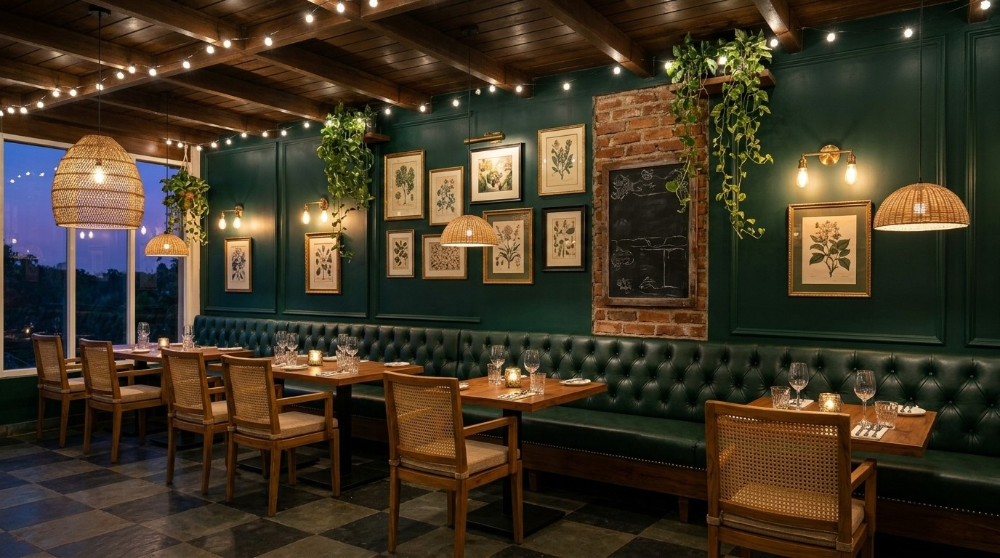
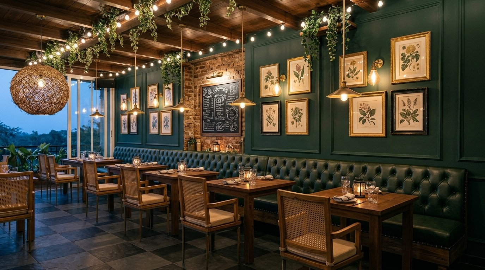
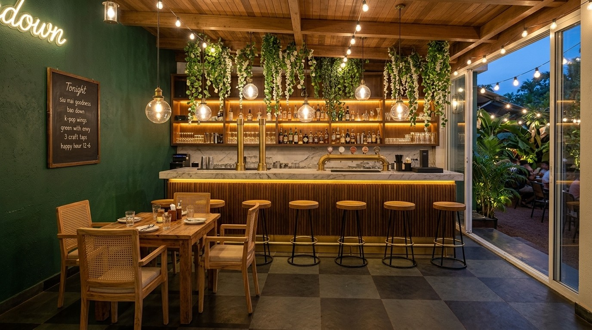
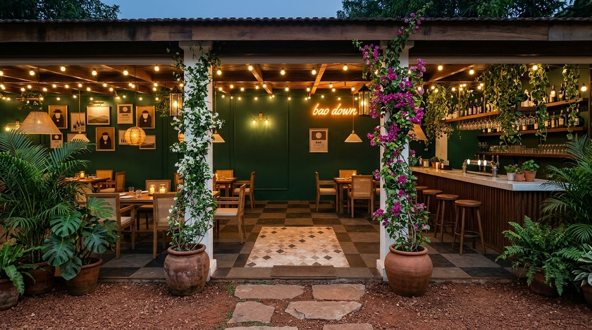
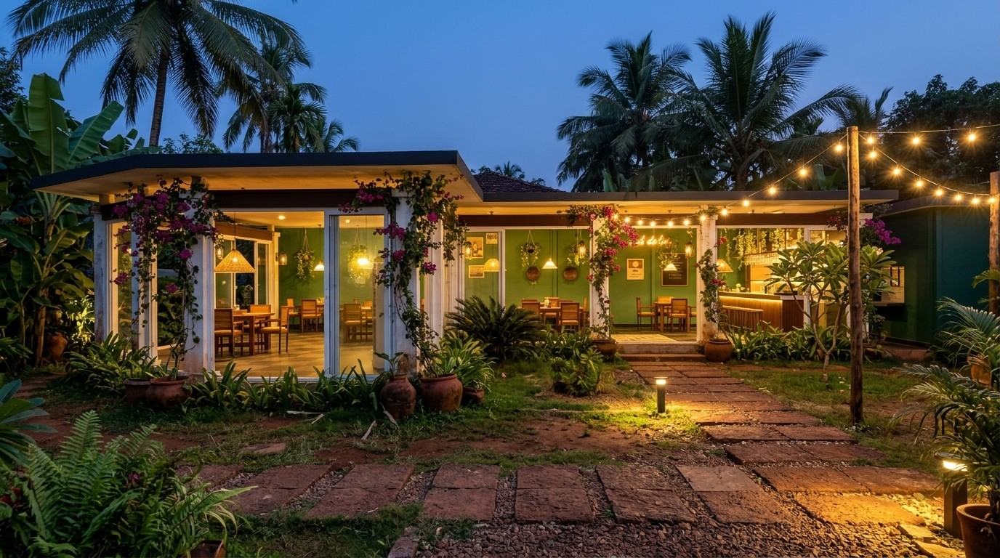

A green room in a garden
The look for the Garden hall, built on the 3D model and the Design Inspos boards: one deep bottle-green panelled wall dressed like an old pub, a dark fluted bar under hanging greenery, and a hall that opens straight onto a lit tropical garden. Every render below keeps the model's layout; only the finishes change.

The decor wall
north wall · 15.67 m
The one solid wall carries the whole pub character. Keep it dark and rich so the open sides and garden read brighter against it.
| Wall | Bottle-green paint, eggshell, over raised MDF panel mouldings in tall rectangles; dark teak skirting |
|---|---|
| Art | Salon hang of 12 to 16 gilt and black frames: botanical prints and black-and-white Goa photographs, hung as one block centred on the wall |
| Lights | Brass twin-arm sconces with clear glass shades, one per panel bay, 2700 K filament bulbs on a dimmer |
| Above | Timber plant shelf at beam height with trailing pothos and Boston ferns |
| Tables | Solid teak tops, cane-backed teak armchairs, candle jars |
| Pendants | Woven rattan globes and cones over each table |
With a buttoned banquette
runs the wall-side tables

Most of the wall photos you saved have deep-buttoned leather seating. A single banquette along the wall replaces the wall-side chairs at the four tables in the front row, so the hall feels more like a pub and the aisle gets wider.
| Seat | Built-in banquette, deep-buttoned bottle-green faux leather (marine-grade vinyl), brass nailhead trim, teak plinth, seat 450 mm high and 550 mm deep |
|---|---|
| Brick bay | One exposed old-brick panel with a black chalkboard (as in the model's last bay) |
| Covers | Should stay at 32 if each wall-side chair becomes a banquette place. Check it in the model before ordering |
The bar
counter 5.48 m
The bar is the brightest thing in the room: a warm glow under the counter, backlit shelves and clear globes, with plants hanging over it like a pergola.
| Front | Dark stained vertical fluted timber, brushed brass kick plate and foot rail, amber LED strip under the counter lip |
|---|---|
| Top | White-and-grey veined marble or quartz, 40 mm edge |
| Taps | Brass beer towers with the craft taps in one row |
| Back bar | Open walnut-tone shelves with amber backlight for glassware and bottles |
| Lights | Clear glass Edison globe pendants over the counter |
| Green | Hanging pothos and faux wisteria from the ceiling above the counter |
| Stools | Round teak seats on black steel legs with a footring |
| Signs | Warm-white neon script on the green wall, chalkboard for tonight's specials |
Hall and entrance
open edge 9.20 m
With the PVC rolled up, the hall should feel like a covered pergola. The string lights and climbing plants do most of that work.
| Ceiling | Festoon string lights zig-zagged under the timber beams, warm-white 2700 K, outdoor-rated (IP65) |
|---|---|
| Columns | Jasmine and bougainvillea trained up the white columns on stainless wire |
| Entrance | Patterned cement-tile mat panel at the door; a pair of large terracotta pots with areca palms either side |
| Floor | Charcoal-and-black checkerboard stone, honed (not polished) so it is not slippery when wet |
The garden approach
outside, at blue hour
The garden sells the place from the road. Light it in layers: festoon overhead, low path lights, and the glowing hall behind.
| Overhead | Festoon runs from the eaves out to timber posts in the garden |
|---|---|
| Path | Laterite stepping stones in gravel, low warm bollard or spike lights every 2 to 3 m |
| Planting | Frangipani, banana, heliconia, ferns and areca palms in terracotta; bougainvillea on the columns |
| Uplights | Warm spike uplights at the base of the coconut palms |
Materials board
take this to suppliers
Built for Goa
The hall is open on three sides, so everything here gets monsoon humidity and salt air.
- Paint: use an exterior-grade, anti-fungal emulsion on the green wall even though it is inside. Ask for a sample pot and look at it at night under 2700 K light before you commit, because dark greens read much darker under warm light.
- Banquette: marine-grade vinyl, not real leather. It survives humidity and wipes clean.
- Brass: lacquered or powder-coated brass-finish fittings, or they will go green within one monsoon.
- Timber: teak or treated hardwood with a marine varnish; MDF mouldings only on the solid wall, sealed on all faces.
- Cane and rattan: fine under the roof, but keep them out of driving rain when the curtains are up.
- Art: frames sealed at the back, prints behind glass, no unframed canvas.
- Lights: every fitting on the open sides IP65 or better.
Next steps
- Choose chairs or the banquette along the wall. If it is the banquette, I update the 3D model and check the covers.
- Order three green sample pots and paint them on 1 m boards on site.
- Get quotes for the fluted bar front with the marble top, and for the banquette.
- Plan the lighting circuits: sconces, pendants, festoon and garden on separate dimmers.
- Start buying frames and prints early; a salon hang takes time to collect.